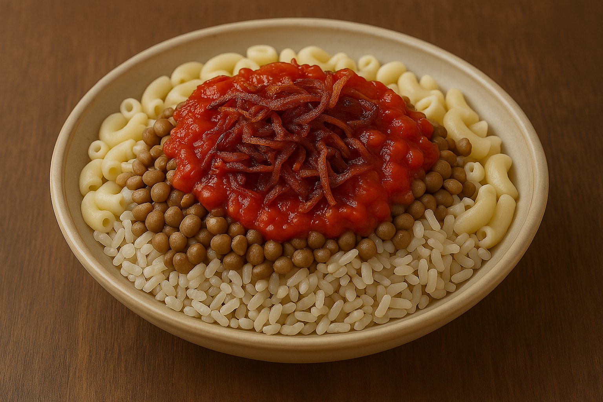

koshary

description:
Koshary (also spelled koshari) is Egypt’s ultimate street
food—hearty, humble, and packed with texture. It’s a layered vegetarian
dish combining lentils, rice, pasta, chickpeas, crispy fried onions, and a
tangy tomato-garlic sauce. Originally influenced by Indian and Italian
cuisines, koshary became a unique Egyptian staple, often served from
street carts to family tables. It’s chaotic in the best way.
ingredients:
base layers:
- 1 cup short-grain rice
- 1 cup brown lentils
- 1 cup small pasta
- 1 cup bioled chickpeas
- 1 large onion,finely sliced
- 1 cup vegetable oil
tomato sauce:
- 2 tablespoons vegetable oil
- 5 cloves garlic,minced
- 1/2 teaspoon ground cumin
- 1/4 teaspoon chili flakes
- 1 can (400g) crushed tomatoes
- 2 tablespoons vinegar
- salt and pepper to taste
spicy vinegar sauce(optional)
- 1/4 cup white vinegar
- 2 cloves garlic, mashed
- 1/4 teaspoon ground chili
- salt to taste
steps:
-
- Prepare the lentils:Boil lentils in salted water
until tender (about 20–25 minutes), then drain.
-
- Cook the rice:In a pot, sauté a bit of garlic in oil,
add rinsed rice and water (2:1 ratio), and cook until fluffy
-
- Boil the pasta: Cook pasta until al dente, drain,
and set aside.
-
- Make the tomato sauce:- In a pan, heat oil, sauté
garlic and cumin, then add tomatoes, vinegar, chili flakes, salt, and
pepper. Simmer for 10–15 minutes.
-
Crisp the onions:- In a skillet, fry the onion slices
until golden and crunchy. Drain on paper towels.
-
assemble:In a bowl, layer rice, lentils, pasta, and
chickpeas. Ladle tomato sauce over the top. Sprinkle with fried onions.
Add the spicy vinegar sauce for extra kick.
Home page